Why Use Databases?
Modern applications and the state they need to remember
Working with External Data
A sales export is input to an analysis.
Each run ends with the report.
Persisting Application State
Objects in memory disappear when the program ends.
The order still needs to exist tomorrow.
What Needs to Survive?
| Keep after a restart |
Usually temporary |
| An order’s contents |
A value used to draw a button |
| A pet’s owner |
An intermediate calculation |
Persistence Cycle

Display State can happen anywhere in this cycle.
A read-only action may load and display without saving.
Why Not Just a File?
A file may be enough for a small program.
- Several people change the same information.
- A change fails partway through.
- Finding the needed records gets harder as data grows.
Pets and Owners
How does the application remember who owns a pet?
What happens when an owner is removed?
How does a web-page change become persistent?
Letting the Database Do More
The page needs the number of dogs.
| Application counts |
Database counts |
| Retrieve every pet |
Request the count |
| Count dogs in the application |
Receive the result |
Course Outline: SQL and
the Application
Structured Query Language (SQL)
| Chapter |
Topic |
| 1 |
Intro SQL |
| 2 |
SQL in Python |
| 3 |
Intro to Web Apps |
| 4 |
Database Abstraction |
| 5 |
Database Constraints |
Course Outline:
Data Access and Optimization
Object-relational mapper (ORM)
| Chapter |
Topic |
| 6 |
Object-Relational Mappers (ORMs) |
| 7 |
ORM with Constraints |
| 8 |
Dataset Library |
| 9 |
Optimization |
Course Outline: Document
Databases
| Chapter |
Topic |
| 10 |
Intro to Mongo |
| 11 |
Mongo App |
| 12 |
MongoDB Atlas |
| 13 |
Mongo Indexes |
| 14 |
Installing MongoDB Locally |
| 15 |
Geospatial Queries |
An Application You Use
What should it remember after you close it?
What can it forget?
What work could its database do?